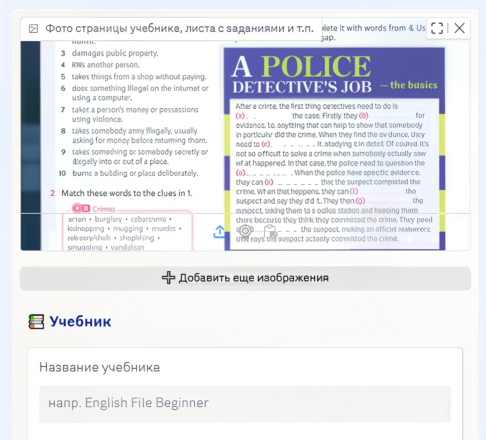

Metodica: умный помощник учителя
AI-ассистент, который составляет планы уроков по фотографии страницы учебного материала .
AI-ассистент, который составляет планы уроков по фотографии страницы учебного материала .

Библиотека материалов для систематизации знаний по внедрению клиентоцентричного подхода в госуправлении.
.
Многомерный индикатор рисков социального сиротства в разрезе регионов РФ.


Факторный анализ вовлечённости.